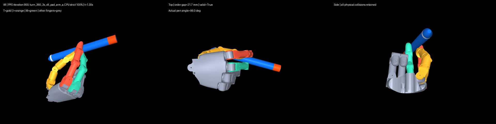
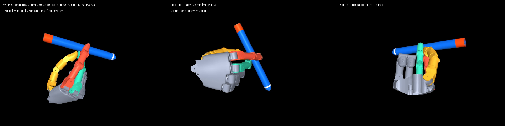
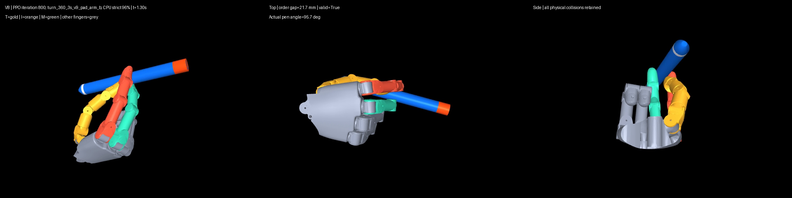
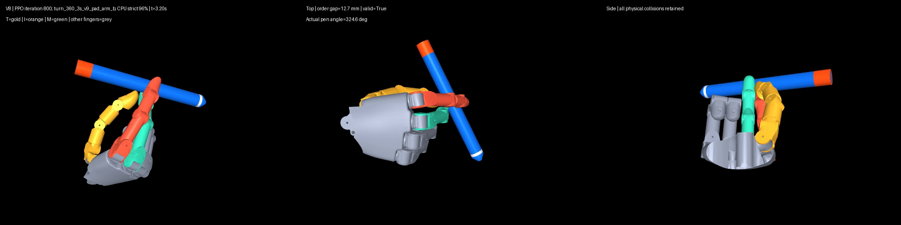

真人参考（已批准）
参考
动作参考；机器人和真人视频未经相位对齐。
A900 在固定 24 回合达到 24/24，但仍待人工确认接触位置、食指/中指关系、释放交接和最终回握。未见种子未打开，30/60/120 秒训练未启动。B800 的 23/24 权重已被旧清理规则删除，不能作为可复现候选。
参考
动作参考；机器人和真人视频未经相位对齐。
待审阅
5.5 秒实际 CPU 策略轨迹，三同步视角；机器固定种子 24/24，未见种子未开。画面左上角 V8 为继承的渲染文字错误。
仅诊断
仅保留视频和原始指标，缺少该轮权重，不能作为可复现交付模型。
失败
相同固定种子、相同局部指腹验收；v8 是用户认可的改进候选，不是完整成功示范。
待审阅
最终训练权重单独保留；固定种子比选中的 A900 少一回合通过。
失败
未达到固定种子 23/24 门槛；保留权重与逐回合失败记录。
失败
视频是首回合示例，失败回合编号与失败门槛见 JSON；本卡保留回归证据。



